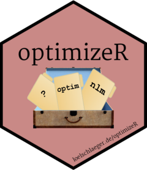

Dictionary of optimizer functions
Source:R/optimizer_dictionary.R
optimizer_dictionary.RdA dictionary of currently included numerical optimizer functions in the
{optimizeR} package, which can be selected via their label in
Optimizer$new() and optimizer().
Any other optimizer function can be defined via the method
$definition() of an Optimizer object.
Format
An R6 object of class Dictionary.
Adding optimizers
Further optimizers can be added to the dictionary via its method $add().
It requires the same elements as the entries of the dictionary (see the
example below), i.e., a label, the algorithm (either the optimization
function itself or its name in the form "package::function", in which
case the package is only required when an Optimizer object
is created), and the arguments of the method $definition() of an
Optimizer object. Note that the dictionary is built when
{optimizeR} is loaded, such that added optimizers are available until the
end of the R session.
Examples
print(optimizer_dictionary)
#> <Dictionary> optimization algorithms
#> Keys:
#> - lbfgsb3c::lbfgsb3c
#> - lbfgsb3c::lbfgsb3
#> - lbfgsb3c::lbfgsb3f
#> - lbfgsb3c::lbfgsb3x
#> - stats::nlm
#> - stats::nlminb
#> - stats::optim
#> - ucminf::ucminf
#> - nloptr::nloptr
#> - vntrs::vntrs
#> - ao::ao
#> - optimx::optimr
#> - DEoptim::DEoptim
#> - GenSA::GenSA
### the definition of an optimizer
str(optimizer_dictionary$get("stats::nlm"))
#> List of 12
#> $ algorithm : chr "stats::nlm"
#> $ arg_objective : chr "f"
#> $ arg_initial : chr "p"
#> $ arg_lower : logi NA
#> $ arg_upper : logi NA
#> $ arg_gradient : chr "gradient"
#> $ arg_hessian : chr "hessian"
#> $ gradient_as_attribute: logi TRUE
#> $ hessian_as_attribute : logi TRUE
#> $ out_value : chr "minimum"
#> $ out_parameter : chr "estimate"
#> $ direction : chr "min"
### add an optimizer to the dictionary
if (requireNamespace("pracma", quietly = TRUE)) {
optimizer_dictionary$add(
"label" = "pracma::nelder_mead",
"algorithm" = "pracma::nelder_mead",
"arg_objective" = "fn",
"arg_initial" = "x0",
"arg_lower" = NA,
"arg_upper" = NA,
"arg_gradient" = NA,
"arg_hessian" = NA,
"gradient_as_attribute" = FALSE,
"hessian_as_attribute" = FALSE,
"out_value" = "fmin",
"out_parameter" = "xmin",
"direction" = "min"
)
nelder_mead <- Optimizer$new("pracma::nelder_mead")
nelder_mead$minimize(function(x) sum((x - 1)^2), initial = c(0, 0))
}
#> $value
#> [1] 0
#>
#> $parameter
#> [1] 1 1
#>
#> $seconds
#> [1] 0.02193499
#>
#> $initial
#> [1] 0 0
#>
#> $error
#> [1] FALSE
#>
#> $count
#> [1] 107
#>
#> $info
#> $info$solver
#> [1] "Nelder-Mead"
#>
#> $info$restarts
#> [1] 0
#>
#>